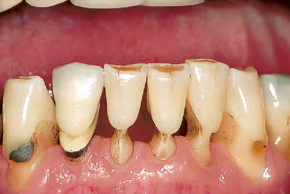
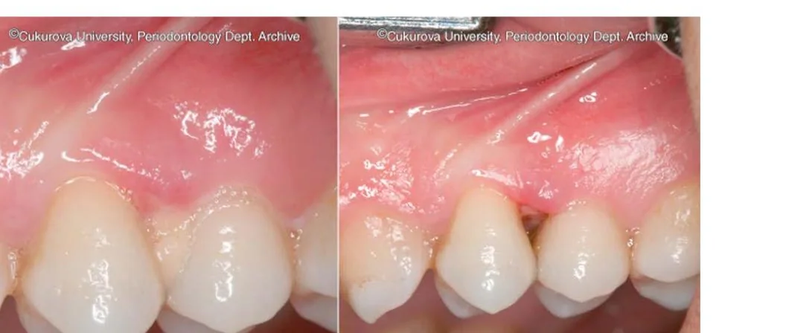

نسخه استخراجشده؛ ترجمه یا تأیید علمی انجام نشده است. وضعیت: captured
طبقهبندی ۲۰۱۷، ضایعات تروماتیک لثه را در سه دسته قرار میدهد: مکانیکی، شیمیایی و حرارتی. همه در یک ویژگی مشترکاند: علتشان بیوفیلم نیست.

زخم لبه لثه — زخم دردناک با شکل خطی یا V مانند، اغلب در سطح باکال.
تحلیل لثه — پیامد مزمنتر همان نیرو.
ابریژن ریشه در ناحیه سرویکال.
📌 الگوی شاخص: در بیماران راستدست، ضایعات سمت چپ دهان شدیدترند — چون دست راست به آن ناحیه فشار بیشتری وارد میکند. همین عدم تقارن، سرنخ تشخیصی خوبی به دست میدهد.
استفاده نادرست از خلال دندان یا برس بیندندانی با اندازه نامناسب.
پیرسینگ لب و زبان — تحلیل موضعی در نقطه تماس.
لبه تیز پروتز متحرک یا کلاسپ.
عادتهای دهانی مانند گاز گرفتن ناخن یا نگه داشتن اشیاء بین دندانها.
| عامل | موقعیت رایج |
|---|---|
| آسپرین که بیمار روی لثه یا کنار دندان دردناک میگذارد | ناحیه مجاور دندان دردناک — کلاسیکترین مورد |
| هیدروژن پراکسید با غلظت بالا یا استفاده طولانی | لثه و مخاط |
| هیپوکلریت سدیم در حین درمان ریشه | مخاط مجاور |
| فنل، نیترات نقره، مواد کوتریزان | محل تماس |
| مواد سفیدکننده بدون نسخه | لثه سرتاسری |
ابتدا ناحیه سفید و نکروزه با مرزهای مشخص. شکل زیر همین رفتار پرده کاذب را در ژنژیویت نکروزان نشان میدهد؛ بیماری دیگری است، اما کنده شدن لایه سفید در هر دو یکسان است.

لایه سفید با گاز جدا میشود و سطح قرمز، دردناک و خونریزیدهنده باقی میگذارد.
شکل ضایعه با شکل تماس ماده منطبق است — نه با توزیع پلاک.
سوختگی با غذا یا نوشیدنی داغ؛ بیشتر در کام و نواحی قدامی. اغلب وزیکول یا ناحیهای اریتماتوز و دردناک که ظرف چند روز بهبود مییابد.
آسیب خودآزارانه با ناخن، مداد یا اشیاء دیگر.
معمولاً یکطرفه، در نواحی قدامی و در دسترس دست بیمار.
شکل ضایعه غیرمعمول و با هیچ الگوی بیماری شناختهشدهای منطبق نیست.
⚠️ تشخیصی از راه حذف؛ نیازمند برخورد حساس و گاه ارجاع برای ارزیابی روانشناختی.
🔑 در ضایعه تروماتیک، شکل و محل ضایعه با توزیع پلاک منطبق نیست؛ بلکه با شکل و محل عامل آسیبرسان منطبق است.
ژنژیویت ناشی از پلاک، الگویی قابل پیشبینی دارد: مارجین لثه و نواحی بیندندانی، متناسب با تجمع بیوفیلم. ضایعه تروماتیک این الگو را نمیشناسد — جای برس، جای قرص، جای ناخن.
پرسشهایی که باید بپرسی:
چه چیزی روی این ناحیه گذاشتهای یا مصرف کردهای؟
مسواک را چگونه و با چه فشاری استفاده میکنی؟ برس نرم است یا سخت؟
از دهانشویه یا ماده سفیدکننده استفاده میکنی؟
آیا این ناحیه را با ناخن یا شیئی لمس میکنی؟
شناسایی و حذف عامل — این خودِ درمان است، نه مقدمه آن.
درمان حمایتی: کنترل درد، بهداشت ملایم، اجتناب از غذاهای تحریککننده.
بهبودی مورد انتظار: ظرف ۱ تا ۲ هفته پس از حذف عامل.
⚠️ قاعده ایمنی حیاتی: اگر ضایعه پس از حذف عامل ظرف دو هفته بهبود نیافت، تشخیص را بازنگری کن و بیوپسی را در نظر بگیر. زخم مقاوم و بدون بهبودی، تا خلافش ثابت نشده باید از نظر بدخیمی بررسی شود.
⚠️ اشتباه رایج ۱: شکل ضایعه با عامل منطبق است، نه با توزیع پلاک.
⚠️ اشتباه رایج ۲: در راستدستها، ضایعات مسواکی سمت چپ شدیدترند.
⚠️ اشتباه رایج ۳: زخمی که پس از دو هفته بهبود نیافت ⬅️ بیوپسی.